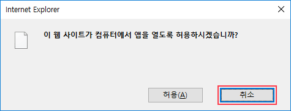
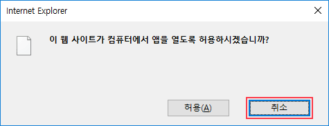

공동인증서 복사 설치안내
공동인증서 복사하기
프로그램을 설치하세요!
-
1다음 팝업에서 “취소”를 클릭하세요.
 -
2“실행”을 클릭하여 프로그램을 설치하세요.
PASS앱 2019년 5월 말 기준
SKT 대표서비스 PASS의 변신!
SKT 본인확인 서비스 PASS가
이제 핀테크 서비스로 발돋움 합니다.
인증, 나의 자산 및 보험,
투자정보까지 한번에 PASS 앱에서
확인할 수 있습니다.
94,560,000원
28,368,000원
PASS를 이용하면
프리미엄 무료 혜택이 가득 !
나의 신용, 부동산, 자산,
보험, 건강 정보까지 한번에
좀 더 높은 금리와 정확한 투자정보까지 제공
투자정보 확인하고 PASS에서 직접투자까지 하세요!
서비스를 이용하시려면
PASS by SKT 앱을 설치하세요!
(*본 앱은 SKT고객만 이용이 가능합니다.)
PC스마트폰
공동인증서 복사하기
- "개인정보"라 함은 생존하고 있는 개인에 관한 정보로서 성명, 주민등록번호 및 영상 등을 통하여 개인을 알아볼 수 있는 정보(해당 정보만으로는 특정 개인을 알아볼 수 없더라도 다른 정보와 쉽게 결합하여 알아볼 수 있는 것을 포함한다.)를 말합니다.
- PASS 서비스(이하 "서비스")는 가입자의 개인정보 보호를 매우 중요시하며, 『정보통신망 이용촉진 및 정보보호 등에 관한 법률』, 『개인정보 보호법』상의 개인정보 보호 규정을 준수하고 있습니다. 또한 "서비스"는 개인정보 처리방침을 통하여 가입자께서 제공하시는 개인정보가 어떤 용도와 방식으로 이용되고 있으며 개인정보를 효과적이고 적극적으로 보호하기 위해 항상 노력하고 있음에 대해 알려드립니다.
- "서비스"는 개인정보 처리방침을 “서비스” 앱에 공개함으로써 가입자께서 언제나 용이하게 보실 수 있도록 조치하고 있습니다.
- "서비스"는 개인정보 처리방침의 지속적인 개선을 위하여 개인정보 처리방침을 개정하는 데 필요한 절차를 정하고 있습니다. 그리고 개인정보 처리방침을 개정하는 경우 버전 번호, 시행 일자 등을 부여하여 개정된 내용을 확인할 수 있도록 하고 있습니다.
- "서비스"의 개인정보 처리방침 중 중요한 사항이 변경되는 경우에는 변경되는 개인정보 처리방침을 시행하기 7일 전부터 “서비스” 앱을 통하여 변경 이유 및 내용을 가입자에게 공지합니다.
1. 개인정보의 수집 항목 및 이용 목적
1) 개인정보 수집 항목
- "서비스"는 본질적인 서비스 제공을 위한 ‘필수 동의’와 가입자 각각의 기호와 필요에 맞는 서비스를 제공하기 위한 ‘선택 동의’로 구분되어 다음의 정보를 수집·이용하고 있습니다.
- "서비스"는 가입자의 기본적 인권 침해의 우려가 있는 민감한 개인정보(인종 및 민족, 사상 및 신조, 출신지 및 본적지, 정치적 성향 및 범죄 기록, 건강 상태 및 성생활 등)는 수집하지 않습니다.
| 필수 동의 항목 | 수집/이용 목적 |
|---|---|
| 성명, 이동전화번호 생년월일, 성별, 내외국인 여부, PIN, 단말기 OS정보 | “서비스” 가입, “서비스” 관련 상담 제공 |
| 이동전화, 간편 본인 확인 이력 (본인확인 웹사이트, 인증일시 |
“서비스” 이용 이력 관리 |
| 이동전화번호, UICC(유심)ID | “서비스” 가입, 이용을 위한 이용자 확인 |
제 1 장 총칙
제 1 조 (목적)
본 약관은 SK텔레콤 주식회사(이하 "회사")가 제공하는 PASS 통합서비스(이하 “서비스”)를 가입자(이하 “가입자”)가 이용함에 있어 “가입자”와 “회사” 간의 권리, 의무 및 책임 사항, “서비스” 이용 조건 및 절차 등 기본적인 사항을 규정함을 목적으로 합니다.제 2 조 (용어의 정의)
① 본 약관에서 사용하는 용어의 정의는 다음과 같습니다. 1. “서비스”라 함은 “회사”가 “가입자”에게 제공하는 본인확인 서비스, 모바일운전면허 확인 서비스확인서비스, 기타 서비스를 총칭합니다. “회사”가 “가입자”에게 제공하는 서비스의 종류는 다음과 같습니다. – 본인확인 서비스 : “가입자”의 스마트폰(이하 “단말기”)에 설치된 전용 “앱” 설치 및 가입을 통하여 이동전화 본인 확인을 하거나, 이동전화 본인 확인 이용 내역을 조회하는 서비스 및 그와 관련된 제반 서비스를 말합니다. – 모바일운전면허 확인서비스 : “가입자”가 본인의 운전면허증을 “앱”에 등록하여, 온라인 및 오프라인에서 “가입자”의 운전 자격 확인, 성인 여부 확인, 이름과 생년월일 확인을 할 수 있도록 하는 서비스 및 그와 관련한 제반 서비스를 말합니다. – 기타 서비스 : “회사”가 지정한 재화 또는 용역을 이용할 수 있도록 하는 서비스, “회사”에서 개발하거나 제휴를 통하여 제공하는 일체의 부가 서비스 및 그와 관련한 제반 서비스를 의미합니다. 2. "가입자"라 함은 “회사”의 “서비스”에 접속하여 이 약관 등에 따라 “회사”와 이용 계약을 체결하고 “회사”가 제공하는 “서비스”를 이용하는 고객을 의미합니다. 3. “앱”이라 함은 “서비스”의 제공 및 이용을 위하여 “단말기”에 설치되는 PASS어플리케이션을 말합니다. 4. “비밀번호”라 함은 “서비스” 이용 시 보안을 위하여 “가입자”가 지정하여 사용하는 PIN(Personal Identification Number)을 말하며, 숫자 6자리로 이루어집니다. 5. “사용처”라 함은 “가입자”가 온•오프라인 상에서 “서비스”를 통하여 사용자 인증 및 로그인, 운전자격 확인, 휴대폰 결제 기능 등을 사용할 수 있는 곳 및 이를 제공하기 위하여 “회사”와 제휴한 사업자 및 그의 서비스를 의미합니다. ② 본 약관에서 사용하는 용어의 정의는 제1항에서 정하는 것을 제외하고는 관계 법령 및 서비스 안내에서 정하는 바를 따릅니다.제 3 조 (약관의 효력 및 변경)
① 본 약관은 “서비스”를 이용하고자 하는 모든 “가입자”에 대하여 그 효력을 발생합니다. 단, 이동전화 서비스와 관련된 내용에 대하여는 “회사”의 이동전화와 관련된 이용약관과 함께 그 효력을 발생하며, 모바일운전면허 확인서비스는 도로교통공단과 함께 제공하는 서비스로 운전면허 상태 정보와 관련된 내용에 대하여는 도로교통공단 및 운전면허 관련 법령에 따릅니다. ② 본 약관의 내용은 “서비스” 내에 게시하거나 기타의 방법으로 “가입자”에게 공지하고, 이에 동의한 “가입자”가 “서비스”를 사용함으로써 효력이 발생합니다. ③ “회사”는 필요하다고 인정되는 경우 본 약관을 변경할 수 있으며, “회사”가 약관을 변경할 경우에는 적용 일자 및 변경 사유를 명시하여 제2항과 같은 방법으로 그 적용 일자 15일 전부터 공지합니다. 다만, “가입자”에게 불리한 약관의 변경인 경우에는 그 적용 일자 30일 전부터 공지하며, 문자 메시지나 E-mail 등으로 “가입자”에게 개별 통지합니다. 단, 개별 통지가 어려운 경우에 한하여 본 항의 공지를 함으로써 개별 통지한 것으로 간주합니다. ④ “회사”가 “가입자”에게 제3항에 따라 변경 약관을 공지 또는 통지하면서, 명시된 기간 내에 거부 의사표시를 하지 않으면 동의하는 것으로 본다는 뜻을 명확하게 공지 또는 통지하였음에도, “가입자”가 명시적으로 거부 의사를 표명하지 않으면, “가입자”가 변경 약관에 동의한 것으로 봅니다. “가입자”는 변경된 약관 사항에 동의하지 않으면 ‘서비스’ 이용을 중단하고 이용 계약을 해지할 수 있습니다.제 4 조 (약관 외 준칙)
본 약관에 명시되지 않은 사항에 대해서는 전기통신기본법, 전기통신사업법 등 관계 법령 및 “회사”가 정한 “서비스”의 세부 이용지침 등의 규정에 의합니다.제 2 장 이용 계약
제 5 조 (이용 계약의 성립)
① “가입자”가 “서비스” 내에 게시되는 약관의 내용에 동의 버튼을 누르면 “서비스” 이용을 신청한 것으로 간주합니다. ② 이용 계약은 제1항에 따른 “가입자”의 이용 신청에 대하여 “회사”가 승낙함으로써 성립합니다. ③ “회사”는 “서비스”를 구성하는 개별 서비스에 대하여 별도의 이용 계약 성립 절차를 둘 수 있습니다. ④ 모바일운전면허 확인서비스의 경우, “가입자”가 본인 명의의 운전면허증에 기재된 정보(이름, 생년월일, 성별, 면허증 유형, 운전면허번호, 적성검사 기간, 발급일, 식별번호)를 입력하여 등록 버튼을 누르면 모바일운전면허 확인서비스 이용을 신청한 것으로 간주합니다.제 6 조 (이용 신청에 대한 승인 및 “서비스” 이용의 제한)
① “회사”는 다음 각호에 해당하는 신청에 대하여는 승낙을 하지 않을 수 있습니다. 1. “가입자”의 “단말기” 또는 USIM 환경, 네트워크 환경상 “회사” 또는 제휴사가 정한 “서비스” 제공 환경이 아니거나, 기술상 “서비스” 제공이 불가능한 경우 2. 실명이 아니거나, 다른 사람의 명의 사용, 이동전화 명의자의 허락 없이 본인 인증을 수행하는 등 “가입자” 등록 시 허위로 신청하는 경우 3. “가입자” 등록 사항을 누락하거나 오기·허위로 기재하여 신청하는 경우 4. 사회의 안녕질서 또는 미풍양속을 저해하거나, 저해할 목적으로 신청한 경우 5. 기타 “회사”가 정한 이용 신청 요건이 만족하지 않았을 경우 6. “서비스” 중 모바일운전면허 확인서비스의 경우, “가입자”가 운전면허자격이 없거나, 자신의 것이 아닌 운전면허증이나 위∙변조된 운전면허증 또는 취소되거나 유효하지 않은 운전면허증의 정보로 등록을 시도하는 경우, 운전면허 정보를 누락하거나 오기∙허위로 기재하여 신청하는 경우 ② “회사”는 “가입자”가 가입한 이동전화 서비스 요금제 등에 따라 “서비스” 요금, “서비스”의 일부 제한 등 “서비스” 이용에 차등을 둘 수 있으며, “가입자”가 가입한 이동전화 서비스의 변동(명의 변경, 해지, 요금제 변경, 이용 정지 등) 여부에 따라 “가입자” 자격 및 “서비스” 요금 등 “서비스” 이용 조건이 변동될 수 있습니다. ③ “가입자”의 이동전화 서비스 번호 변경, “단말기” 변경, 명의 변경, USIM 칩 등의 변경 등 이동전화 서비스 관련 계약 사항 변경이 발생한 경우, 사용자 인증 절차를 다시 진행할 수 있습니다. ④ “가입자”의 운전면허 상태 정보에 변경이 생긴 경우, 기존 등록된 운전면허 정보 삭제 및 재등록 절차를 요구할 수 있습니다. ⑤ “회사”는 “가입자”의 이용 신청을 승낙한 때부터 “서비스”를 개시합니다. 다만 기술적 사유 등으로 인하여 지정된 일자부터 “서비스”를 개시할 수 있습니다. ⑥ “회사”의 업무상 또는 기술상 장애 등으로 인하여 “서비스”를 개시하지 못하는 경우에는 “앱”에 공시하거나, “가입자”에게 이를 통지합니다.제 7 조 (기재 사항의 수정)
① “회사”가 “서비스”의 필요에 따라 “가입자”에게 요청한 기재 사항이 변경되었을 경우, “가입자”는 “회사”가 정한 별도의 양식 및 방법에 따라 수정하여야 합니다. “회사”는 “가입자”가 변경 사항을 적시에 수정하지 않아 발생하는 문제에 대해서는 회사는 다른 귀책 사유가 없는 한 책임을 부담하지 않습니다. ② 모바일운전면허 확인서비스는 “가입자”의 실물 운전면허증 정보를 기반으로 제공되는 서비스로, “가입자”가 모바일운전면허 정보를 등록한 이후라도, 실물 운전면허증을 분실했을 시 도로교통공단에 이에 대한 분실신고를 하여야 하며, 분실신고 시 기존에 등록된 “가입자”의 모바일운전면허 확인서비스의 사용은 불가능합니다. “회사”는 “가입자”가 모바일운전면허 정보 등록 이후 실물 운전면허증을 분실하였음에도 분실신고 없이 모바일운전면허 확인서비스를 사용하다가 분실된 실물 운전면허증으로 인해 발생하는 사고에 대해서는 책임을 부담하지 않습니다.제 3 장 “서비스” 이용
제 8 조 (“서비스” 제공)
① “회사”는 “가입자”의 이용 신청을 승낙한 때부터 아래와 같은 “서비스”를 구성하는 본인확인 서비스, 모바일운전면허증 서비스, 기타 서비스를 사용할 수 있습니다. ② 다만, “서비스” 내에서도 일부 하위 서비스의 경우 별도의 이용약관에 동의하거나, 필요한 추가 정보를 기재하거나, 결제 또는 별도의 인증 절차를 완료하여야 서비스 이용이 가능합니다. 모바일운전면허 확인서비스의 경우, 본인 명의의 실물 운전면허증을 등록하여야 하며, 기재한 정보를 도로교통공단이 보유하고 있는 정보와 비교하여 그 유효성 및 “가입자”와 명의가 일치함이 확인되어야 해당 서비스의 이용이 가능합니다. ③ “회사”는 “가입자”가 본 약관 및 개인정보 처리방침에 동의하고 “앱”의 설치 또는 업데이트를 수락한 때부터 “회사”가 제공하는 “서비스”에 대한 이용 동의 및 문자 메시지 등에 대한 수신 동의를 허락한 것으로 간주합니다.제9조 (모바일운전면허 확인서비스)
① “가입자”는 “앱”에 본인 명의의 실물 운전면허증을 등록하여 “사용처”의 요청이 있을 경우에 운전면허 자격확인 및 개인신분 확인 용도로 이용할 수 있습니다. ② 모바일운전면허 확인서비스는 “앱”에 등록된 운전면허 정보를 제시하는 행위만으로는 서비스가 완성되지 않으며, “가입자”가 “앱”을 통해 명시적으로 인증을 수행하여 “사용처”로 검증결과가 전달되거나, “사용처”의 권한 있는 자로부터 검증∙확인 절차를 완료하는 시점에 효력이 인정됩니다. ③ “사용처”의 업무방침 및 이용약관에 따라 모바일운전면허 확인서비스의 이용제한 및 실물 운전면허증 대비 효력의 차이가 발생할 수 있으며, 이에 대하여 “회사”는 관여하지 않습니다. ④ “사용처”가 아닌 기관 및 서비스에서의 모바일운전면허 확인서비스 이용으로 인한 불이익 또는 사용제한∙거부에 대해서는 “회사”가 책임지지 않습니다.제 10 조 (“서비스” 이용 시간)
① “서비스”의 이용은 연중무휴 1일 24시간을 원칙으로 합니다. 다만, “회사”의 업무상이나 기술상의 이유로 “서비스”가 일시 중지될 수 있고, 또한 운영상의 목적으로 “회사”가 정한 기간에 “서비스”가 일시 중지될 수 있습니다. 이러한 경우 “회사”는 사전 또는 사후에 이를 공지합니다. ② “회사”는 “서비스”를 일정 범위로 분할하여 각 범위별로 이용 가능한 시간을 별도로 정할 수 있으며, 이 경우 사전에 공지를 통하여 그 내용을 공지합니다.제 11 조 (“서비스”의 변경 및 중지)
① “회사”는 “서비스”의 향상을 위하여 “서비스”의 전부 또는 일부 내용을 변경할 수 있습니다. 이 경우 “회사”는 변경될 “서비스”의 내용 및 제공 일자를 “앱” 또는 웹페이지 등을 통하여 “가입자”에게 공지합니다. ② “회사”는 다음 각호에 해당하는 경우 “서비스”의 전부 또는 일부를 중단·제한하거나 폐지할 수 있습니다. 1. “서비스”용 설비의 보수 등 공사로 인한 부득이한 경우 2. “가입자”가 “회사”의 영업 활동을 방해하는 경우 3. 정전, 제반 설비의 장애 또는 이용량의 폭주 등으로 정상적인 “서비스” 이용에 지장이 있는 경우 4. 개별 “서비스” 제공업자와 계약 종료 등의 사정으로 “서비스”의 전부 또는 일부를 유지할 수 없는 경우 5. “회사”의 “서비스” 정책 변경, 수익성 악화 및 이동전화 서비스 폐지 등 “회사”의 경영상의 판단에 따라 “서비스”의 전부 또는 일부를 제공하지 않기로 결정한 경우 6. 기타 천재지변, 국가비상 사태 등 불가항력적 사유가 있는 경우 7. 모바일운전면허 확인서비스에 법적 효력을 부여한 과학기술정보통신부 규제샌드박스 임시 허가 기간의 만료 시점까지 관련 법 개정이 이루어지지 않은 경우 ③ 제2항에 의한 “서비스” 중단·제한 및 폐지의 경우에는 “회사”가 제1항에서 정한 방법으로 “가입자”에게 사전 통지합니다. 다만, 이용량 폭주, 디스크 장애, 시스템 다운 등 “회사”가 통제할 수 없는 사유로 인한 “서비스”의 중단·제한으로 인하여 사전 통지가 불가능한 경우에는 그러하지 아니합니다. ④ “회사”는 제1항 또는 제2항에 따른 “서비스”의 변경, 중단·제한 또는 폐지로 발생하는 문제에 대해서는 회사는 다른 귀책사유가 없는 한 어떠한 책임도 부담하지 않습니다.제 12 조 (정보의 제공 및 광고의 게재)
① “회사”는 ‘서비스’와 관련된 다양한 정보 및 광고를 ‘서비스’ 화면에 게재하거나, 문자 메시지나 E-mail 등을 이용하여 “가입자”에게 제공할 수 있습니다. ② “가입자”가 ‘서비스’ 상에 게재된 광고를 이용하거나, 판촉 활동에 참여하는 등의 행위는 전적으로 “가입자”와 광고주의 거래로, “회사”는 개입할 의무가 없습니다. “가입자”와 광고주 간에 분쟁이나 기타 문제가 발생할 경우, “가입자”와 광고주가 직접 해결하여야 하며, 이와 관련하여 “회사”는 어떠한 책임도 지지 않습니다.제 4 장 계약 당사자의 의무
제 13 조 (“회사”의 의무)
① “회사”는 “서비스” 제공과 관련하여 취득한 “가입자”의 개인정보를 본인의 승낙 없이 제3자에게 누설·배포하지 않습니다. 단, 다음의 경우는 예외로 합니다. 1. 다른 법률에 특별한 규정이 있는 경우 (관계 법령에 따른 수사상의 목적으로 관계기관으로부터 요구받은 경우나 방송통신심의위원회의 요청이 있는 경우 등 법률의 규정에 따른 적법한 절차인 경우) 2. “가입자”가 의사표시를 할 수 없는 상황이거나, “가입자”로부터 사전 동의를 받을 수 없어서 “가입자” 또는 제3자의 생명, 신체, 재산을 보호하기 위하여 반드시 필요하다고 인정되는 경우 3. 정보통신망 이용촉진 및 정보보호 등에 관한 법률과 개인정보 보호법 등 관련 법령에 따라, 통계작성, 학술연구 등의 목적을 위하여 필요한 경우로서 특정 개인을 알아볼 수 없는 형태로 개인정보를 사용하는 경우 ② “회사”는 “서비스”와 관련한 “가입자”의 불만 사항이 접수되는 경우 이를 신속하게 처리하여야 하며, 신속한 처리가 곤란한 경우 그 사유와 처리 일정을 “서비스” 화면에 게재하거나 E-mail 등을 통하여 동 “가입자”에게 통지합니다. ③ “회사”가 제공하는 “서비스”로 인하여 “가입자”에게 손해가 발생한 경우, 그러한 손해가 “회사”의 고의나 과실로 인해 발생한 때에 한하여 “회사”에서 책임을 부담합니다. ④ “회사”는 정보통신망 이용촉진 및 정보보호에 관한 법률, 통신비밀보호법, 전기통신사업법 등 “서비스”의 운영, 유지와 관련 있는 법규를 준수합니다.제 14 조 (“가입자”의 의무)
① “가입자”는 “단말기”, “앱”, “비밀번호”, “서비스” 내 화면 등 접근 매체를 제3자에게 대여하거나 사용 위임, 양도 또는 담보 목적으로 제공할 수 없습니다. ② “가입자”는 “단말기”, “앱”, “비밀번호”, “서비스” 내 화면 등 접근 매체를 제3자에게 누설 또는 노출하거나 방치하여서는 안 되며, 접근 매체의 도용이나 위조 또는 변조를 방지하기 위하여 충분한 주의를 기울여야 합니다. ③ “가입자”는 “단말기”, “앱”, “비밀번호”, “서비스” 내 화면 등 접근 매체를 스스로의 책임 하에 관리하여야 하며, 접근 매체의 훼손·분실·도난·유출되는 등의 사고가 발생하는 경우, “가입자”는 즉시 그 사실을 “앱”, 홈페이지, 고객센터 등을 통하여 “회사”에 통지하여야 합니다. ④ “가입자”는 “회사”의 서면에 의한 승인 없이 “앱”의 내용을 수정·변경할 수 없습니다. 또한 리버스 엔지니어링, 디컴파일 또는 디어셈블 등 본래의 목적에 벗어난 변형, 소스 코드 분석 등을 할 수 없습니다. 이를 위반할 경우 지식재산권 침해 행위로 간주하여 관련 법에 의하여 책임을 부담할 수 있습니다. ⑤ “가입자”는 모바일 운전면허 확인서비스 이용을 위하여 “앱” 내 운전면허등록 시점에 적법‧유효한 본인인의 실물 운전면허증 정보를 등록하여야 하며, 타인의 실물 운전면허증 또는 유효기간이 도과한 실물 운전면허증 등을 기반으로 운전면허증 정보를 등록하지 않아야 합니다.제 15 조 (“가입자”에 대한 통지)
① “회사”가 “가입자”에게 개별적인 통지를 하는 경우 “가입자”가 등록한 E-mail 또는 문자 메시지 전송 등의 방법으로 통지할 수 있습니다. ② “회사”는 “가입자”에게 개별통지하기가 어렵거나, 불특정 다수 “가입자”에게 통지를 해야 하는 경우, ‘서비스’ 내에 게시함으로써 개별 통지를 대신할 수 있습니다.제 16 조 (개인정보의 처리)
① “회사”는 “서비스” 제공을 위하여 필요한 경우 개인정보보호법 등 관계 법령에 따라 “가입자”의 개인정보 처리를 위탁할 수 있습니다. ② “회사”는 “서비스” 제공을 위하여 필요한 경우 개인정보보호법 등 관계 법령에 따라 “가입자”의 동의를 받고 개인정보를 제휴사, 가맹점 등에 제공할 수 있습니다. ③ “회사”가 “서비스” 제공 과정에서 인지 또는 취득한 “가입자”의 개인정보는 “회사”의 개인정보처리방침에 의하여 관리하며, 개인정보처리방침은 “앱” 또는 웹페이지에 게시합니다.제 5 장 “서비스” 계약 해지 및 이용 제한
제 17 조 (계약 해지 및 이용 제한)
① “가입자”가 “서비스” 이용 계약을 해지하고자 할 경우에는 본인이 “서비스” 상에서 또는 “회사”가 정한 별도의 방법으로 “회사”에 해지 신청을 하여야 합니다. “가입자”가 “앱”을 삭제하더라도 본 항에 따른 이용 계약 해지 절차를 거치지 않을 경우에는 “서비스”가 해지 처리되지 않습니다. ② “회사”는 “가입자”가 제13조에서 규정한 “가입자”의 의무를 이행하지 않을 경우, 사전 통지 없이 즉시 이용 계약을 해지하거나 또는 “서비스” 이용을 제한할 수 있습니다. ③ “가입자”는 “회사”의 이용 제한 조치에 대하여 E-mail 또는 서면 등의 방법으로 “회사”에 이의 신청을 할 수 있습니다. ④ “가입자”의 이의가 정당하다고 인정되는 경우, “회사”는 즉시 “서비스”의 제공을 재개합니다.제 18 조 (양도 금지)
① “가입자”는 “서비스”의 이용 권한, 기타 이용 계약상 지위를 타인에게 양도·증여할 수 없습니다. ② “회사”가 제3자에게 합병 또는 분할 합병되거나 “서비스”를 제3자에게 양도함으로써 “서비스”의 제공 주체가 변경되는 경우, “회사”는 사전에 “가입자”에게 통지합니다. 이 경우 합병, 분할합병, “서비스” 양도에 반대하는 “가입자”는 “서비스” 이용 계약을 해지할 수 있습니다.제 6 장 손해배상 및 기타
제 19 조 (손해배상)
① “회사” 또는 “가입자”가 본 약관의 규정을 위반함으로 인하여 “회사” 또는 다른 “가입자”에게 손해가 발생하게 되는 경우, 본 약관을 위반한 당사자는 다른 당사자에게 발생한 손해를 배상합니다. ② “가입자”가 ‘서비스’를 이용하면서 불법행위를 행하거나 본 약관 위반함으로 “회사”가 해당 “가입자” 이외의 제3자로부터 손해배상 청구 또는 소송을 비롯한 각종 이의 제기를 받는 경우, 귀책 사유가 있는 해당 “가입자”는 자신의 책임과 비용으로 “회사”를 면책시키고 “회사”에 발생한 모든 손해를 배상하여야 합니다. ③ 본 조항은 “가입자”가 스스로 ‘서비스’ 계약을 해지하거나, “회사”가 약관에 근거하여 이용 중지를 한 이후에도 계속하여 효력을 가집니다.제 20 조 (면책 조항)
① “회사”는 제11조 제2항 및 천재지변 또는 이에 준하는 불가항력으로 인하여 “서비스”를 제공할 수 없는 경우에는 “서비스” 제공에 관한 책임이 면제됩니다. ② “회사”는 다음 각호의 사유로 인한 손해에 대하여 보상 또는 배상할 책임이 없습니다. 1. 1. 천재지변, 파업, 관련 법규의 변경, 관계 기관의 명령 및 지침, 또는 외부로부터 발생한 사건 등 “회사”가 통제할 수 없는 사유로 본 “서비스”를 제공할 수 없는 경우 2. “가입자”가 이동전화 번호, “단말기”, “비밀번호”, 실물 운전면허증 등의 관리를 소홀히 한 경우 3. “가입자”가 본 “서비스”에 제공한 정보·자료·사실 등이 부정확하여 본 “서비스”를 원활히 제공할 수 없었던 경우 4. “회사”의 관리 영역이 아닌 장애로 본 “서비스”의 이용이 불가능한 경우 5. 기타 “회사”의 귀책 사유가 없는 제휴사 등의 장애 또는 “가입자”의 귀책 사유에 의한 통지 내역 미확인 등에 인한 경우 ③ “회사”는 본 “서비스”와 관련된 “가입자” 상호 간 또는 “가입자”와 제3자 상호 간의 분쟁에 개입할 수 없으며, “회사”의 귀책 사유가 없는 한 이로 인한 손해를 보상 또는 배상할 책임이 없습니다. ④ “회사”는 “가입자”가 제공한 “가입자” 본인의 정보에 대한 정확성·진위·유효성 확인의 책임이 없으며, “가입자”가 제공한 정보의 오류로 인하여 발생한 손해에 대하여 보상 또는 배상할 책임이 없습니다. ⑤ “회사”가 “단말기”, “앱”, “비밀번호”, 프로그램 등 접근 매체의 발급 주체가 아닌 경우, 접근 매체의 위조나 변조에 의한 “가입자” 손해에 대하여 “회사”는 이를 보상 또는 배상할 책임이 없습니다. ⑥ “회사”가 공식적으로 제공한 경로가 아닌, 비공식적 경로를 통하여 “앱”을 다운로드/설치한 “가입자”에게 발생한 손해에 대하여, “회사”는 이를 보상 또는 배상할 책임이 없습니다. ⑦ “가입자”가 제14조에서 명시한 “가입자”의 의무를 소홀히 하여 손해가 발생한 경우 “회사”는 다른 귀책 사유가 없는 한 이를 보상 또는 배상할 책임이 없습니다. ⑧ “회사”가 제공한 “앱”이 “가입자”의 “단말기” 환경의 문제로 인하여 이용할 수 없을 경우 “회사”는 그에 대한 책임은 부담하지 않습니다. ⑨ “회사”는 “가입자”의 귀책 사유로 인한 “서비스”의 이용 장애에 대하여 책임을 지지 않습니다.제 21 조 (영리 목적의 광고성 정보의 전송)
① “회사”는 “서비스”의 운영과 관련하여 영리 목적의 광고성 정보를 포함한 다양한 정보를 “서비스” 웹페이지, “앱” 초기 화면, 공지 사항, E-mail 등의 방법으로 “가입자”에게 제공할 수 있습니다. 다만, “가입자”는 영리 목적의 광고성 정보에 대하여는 언제든지 E-mail 등에 대해서 수신 거절을 할 수 있습니다. ② “회사”가 제1항의 정보 중 영리 목적의 광고성 정보를 전자 매체를 이용하여 전송하려고 하는 경우에는 회원의 사전 동의를 받아서 전송합니다.제 22 조 (분쟁 조정 및 관할 법원)
① “서비스” 이용과 관련하여 “회사”와 “가입자” 사이에 분쟁이 발생한 경우, “회사”와 “가입자”는 분쟁의 해결을 위하여 성실히 협의합니다. ② 본 약관과 관련한 제반 분쟁 및 소송의 관할은 민사소송법상 관할 조항에 따릅니다. ③ “서비스”에 관한 분쟁이 발생한 경우 양 당사자 간 합의로 해결함을 원칙으로 합니다. 다만 당사자 간에 합의할 수 없거나 합의가 이루어지지 않는 경우, 분쟁의 해결은 “회사”의 소재지를 관할하는 법원으로 합니다.[부칙]
(시행일) 본 약관은 2020년 6월 22일부터 시행합니다.
공동인증서 복사하기
프로그램을 설치하세요!
1다음 팝업에서 “취소”를 클릭하세요.
2“실행”을 클릭하여 프로그램을 설치하세요.